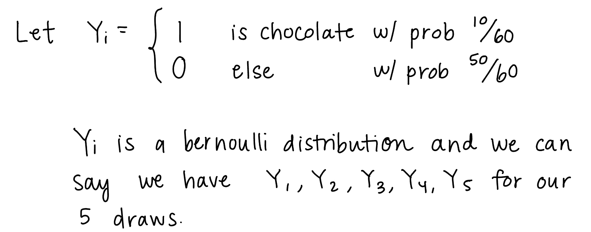
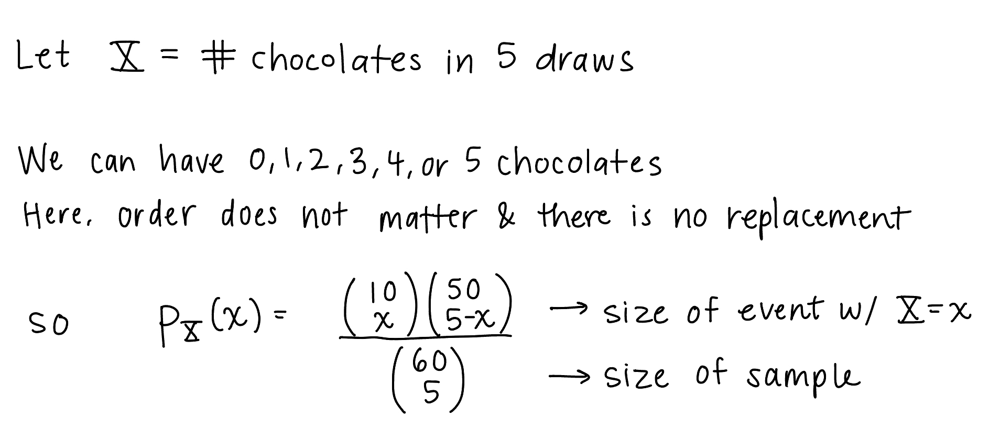

Week 4
Resources
| Chapter | Topic | Slides | Annotated Slides | Recording |
|---|---|---|---|---|
| 9 | Independence and Conditioning (Joint Distributions) | |||
| 10 | Expected Values of discrete RVs | |||
| 11 | Expected Values of sums of discrete RVs |
For the slides, once they are opened, if you would like to print or save them as a PDF, the best way to do this is:
- Click on the icon with three horizontal bars on the bottom left of the browser.
- Click on “Tools” with the gear icon at the top of the sidebar.
- Click on “PDF Export Mode.”
- From there, you can print or save the PDF as you would normally from your internet browser.
On the Horizon
Virtual Class 10/25
Midterm 11/1 (in class)
Announcements
Announcements on 10/18
HW 2 feedback is posted
I am converting my Friday office hours to a “coffee hour”
This means you can come with any questions, frustrations, ideas, etc. on the program
I will no longer be answering course content questions
HW 3
For some reason I took down the answer for NTB #1
It’s back up!
Sorry for the confusion!
Class Exit Tickets
Statistician of the Week: Joy Buolamwini

Dr. Buolamwini earned a BS in Computer Science from Georgia Institute of Technology, an Master’s from University of Oxford, and MS and PhD (2022) degrees in Media Arts & Sciences from Massachusetts Institute of Technology. While a graduate student, Dr. Buolamwini was part of the MIT Media Lab. Additionally, she is the founder of the Algorithmic Justice League.
Topics covered
Dr. Buolamwini has done substantial work demonstrating how algorithms can encode bias. Her undergraduate senior project was to create a inspired “mask” mirror as a way to raise spirits for the person who looked into the mirror. The project relied on off the shelf facial recognition software that could not recognize Dr. Buolamwini’s face.
Since then, she has focused her work on demonstrating bias across racial and gender spectra in off the shelf software. Her work has been cited as directly influencing Microsoft and Google’s changes to their algorithms.
Among many other aspects, a big focus of Dr. Buolamwini’s work is pointing out the biased data which directly impacts how algorithms learn how to do tasks.
Relevant work
Buolamwini, J., Gebru, T. Gender Shades: Intersectional Accuracy Disparities in Commercial Gender Classification. Proceedings of Machine Learning Research 81:1–15, 2018 Conference on Fairness, Accountability, and Transparency.
Raji, I & Buolamwini, J. Actionable Auditing: Investigating the Impact of Publicly Naming Biased Performance Results of Commercial AI Products. Conference on Artificial Intelligence, Ethics, and Society, 2019
Outside links
Other
Dr. Buolamwini has done a lot of work on how data propagates through systems to encode the same types of bias into different algorithms. In her video AI, Ain’t I a Woman? she demonstrates how systems designed to determine gender are particularly poor when using dark skinned faces.
Her work was featured in a recent documentary Coded Bias.
Please note the statisticians of the week are taken directly from the CURV project by Jo Hardin.
Muddiest Points
1. How does this link to more real life applications? Isn’t this the same as the previous chapters, but with new notation?
We’ll see a better application in homework 4 (but don’t worry, it won’t be overly complicated).
So far, yes, the joint distribution we have done with discrete random variables have been very similar to the examples with events A and B. This is mostly meant to guide us through some of the new and difficult notation. You can think of our work so far with pmf’s and CDFs as a way to rewrite and reframe the previous problems we have looked at. This reframing is going to help us when we start looking at continuous random variables.
2. Notation is hard to get down!
What is F? Is it a function?
Yes, it is! It is the function: \[F_X(x) = \mathbb{P}(X \leq x)\]
The CDF stands for cumulative distribution function, which we write in math terms as \(F_X(x)\). The CDF is the probability that \(X\) will take a value less than or equal to \(x\). Just like the pmf, the sample space is defined by \(X\), but the range of values that \(F\) maps to is 0 to 1, and is increasing as \(x\) increases.
What’s an RV and what’s the value that an RV takes on?
Here’s what I wrote in Week 3 Muddy Points:
What’s the difference between \(X(\omega)\) (random variable) and \(x\) (the value of the random varaible)?
In class we defined \(X(\omega) = x\). We call \(X(\omega)\) or \(X\) the random variable and \(x\) the realized value of that random variable.
For example: If I roll 20 dice, what is the number of dice that come up with 6?
\(X\) (or \(X(\omega)\)) is the number of 6’s that come up
\(x\) is the realized value (like 4 dice have 6’s) that can be observed
The number of 6’s (\(X\) or \(X(\omega)\)) is not yet a realized value, but it can be any of the realized values, \(x\)! Thus, we write \(X = x\).
I thought this Reddit thread is pretty helpful!
pmf vs. CDF: takes practice to remember the difference
For this, I’d say practice helps the most to distinguish between them.
| pmf | CDF | |
|---|---|---|
| Math representation | \(p_X(x)\) | \(F_X(x)\) |
| Definition | \(p_X(x) = \mathbb{P}(X=x) = \\ \mathbb{P}(\mathrm{all }\ \omega\in S:X(\omega) = x)\) | \(F_X(x) = \mathbb{P}(X \leq x) = \sum \limits_{\{all\ l:\ l\leq x\}}p_X(l)\) |
| Spoken meaning of math rep | The probability that X equals ___. | The probability that X is less than or equal to ____. |
| Properties |
|
|
I really suggest that you do this kind of table for all the different probabilities that we’ve identified so far:
\(p_{X,Y}(x,y)\)
\(F_{X,Y}(x,y)\)
\(p_{X|Y}(x|y)\)
\(F_{X|Y}(x|y)\)
3. For the drawing \(200\) cards example: why \(x = 0, 1, 2, ..., 200\) but \(i = 1, 2, 3, ...,200\) instead of \(201\)? Doesn’t that mean we’re summing over a shorter interval?
Yes! The interval that we sum over will be 1 to 200, but this will still cover all the x values from 0 to 200. When we sum over \(i=1, 2, 3, …, 200\) draws, if all 200 the draws (all \(Y_i\)’s) come up with cards that are not hearts, then the sum is 0 (\(\sum_{i=1}^{200} Y_i = 0\)). Thus, \(x\) can still take on a 0 value.
4. I got a little tripped up on what \(a_i\) means in theorem 11.1: sum of discrete RVs. Wouldn’t it just be an \(a\)? Or is it \(a_i\) because it’s a different constant (the probability?) for each \(X_i\)?
It would not be \(a\) (without the \(i\)). It is because \(a_i\) represents a different constant for each \(X_i\)! So you are right! However, \(a_i\) is not a probability. This is where the expected value gets a little confusing with all the sums. The expected value of a single random variable is defined by \(E[X_1] = \sum_{j=1}^{m} x_j p_{X_1}(x_j)\), where \(m\) is the total number of values \(X_1\) can take and \(j\) is the \(jth\) value of \(X_1\). Then if we want to look at the expected value of the sum of \(X_1\) and \(X_2\), We look at \(E\bigg[\sum_{i=1}^{2} X_i\bigg] =E[X_1 + X_2] =E[X_1] + E[X_2]=\sum_{j=1}^{m} x_j p_{X_1}(x_j) + \sum_{k=1}^{h} x_k p_{X_2}(x_k)\). If we then wanted to look at the expected value of the sum of \(3\times X_1\) and \(2 \times X_2\), we could write: \(E\bigg[\sum_{i=1}^{2} a_i X_i\bigg] =E[3X_1 + 2X_2] =E[3X_1] + E[2X_2]=3E[X_1] + 2E[X_2]= 3\sum_{j=1}^{m} x_j p_{X_1}(x_j) + 2\sum_{k=1}^{h} x_k p_{X_2}(x_k)\)
5. Expected value for our examples with and without replacement (and then also with finite and infinite draws)
First, I would like to welcome you to my stream of thought on this… I had a big brain fart, so you’ll see me go down one path only to realize something else. I decided to keep it all up because I show some good work that might be helpful. It also shows that sometimes you completely forget an essential part of your learning then have a big light bulb!
Let’s start with our ghost example from Chapter 11 notes:
The ghost is trick-or-treating at a different house now. In this case it is known that the bag of candy has 10 chocolates, 20 lollipops, and 30 laffy taffies. The ghost grabs a handful of five pieces of candy. How many pieces of chocolate do we expect the ghost to take?
In the above problem, I tried to intentionally word it so that we are simultaneously sampling all five candies instead of drawing one candy then another then another… However, this is still confusing. So let’s just say with and without replacement. We have two options for our problem:
The ghost takes five pieces of candy with replacement
The ghost takes five pieces of candy without replacement
| With replacement | Without replacement |
|---|---|
Because the probability is the same between draws, the Bernoulli distributions are identical: 
|
I struggled with showing this without using counting, so here it is solved using the Chapter 10 approach:  \(p_X(x)\) above is only for \(x=0, 1, 2, 3, 4, 5\)
|


The final expected values for BOTH are the same!! Why are they the same???
If you go back to the “with replacement” and try to use counting to solve the expected value, we can start with \[p_X(x) = \dfrac{{10+x-1 \choose x}{50 + (5-x) -1 \choose 5-x}}{{60 + 5 -1 \choose 5}}\]
which comes from the last of the Chapter 22 slides. For order does not matter and with replacement we count possibilities using \({n+r-1 \choose r}\).
Then the expected value of \(X\) using this probability is \[E\Bigg[\sum_{x=0}^5 x p_X(x)\Bigg]\] which also equals \(5/6\)!!
\[ \begin{align} E\Bigg[\sum_{x=0}^5 x p_X(x)\Bigg] & = 0p_X(0)+1p_X(0)+2p_X(0)+3p_X(0)+4p_X(0)+5p_X(5) \\ & = 1\dfrac{{10 \choose 1}{50 + 4 -1 \choose 4}}{{60 + 5 -1 \choose 5}} + 2\dfrac{{10+1 \choose 2}{50 + 3 -1 \choose 5-2}}{{60 + 5 -1 \choose 5}}+3\dfrac{{10+2 \choose 3}{50 + 2 -1 \choose 2}}{{60 + 5 -1 \choose 5}}+ \\ & \text{ }\text{ }\text{ }\text{ }\text{ }\text{ }\text{ }4\dfrac{{10+4-1 \choose 4}{50 + (5-4) -1 \choose 5-4}}{{60 + 5 -1 \choose 5}}+5\dfrac{{10+5-1 \choose 5}{50 + (5-5) -1 \choose 5-5}}{{60 + 5 -1 \choose 5}} \\ & = \dfrac{5}{6}\end{align}\]
This still does not quite answer why they are the same.
Eureka! I figured out why both of these cases have the same expected value but are inherently different! It helped me to see the known distributions again. For some reason, I kept thinking: “Why are the expected values the same?? The pmf’s are different and this is making me think that with and without replacement leads me to a binomial no matter what…” That’s absolutely not true, and a big brain fart on my end! One is a binomial distribution and one is a hypergeometric distribution!
With replacement = binomial
Without replacement = hypergeometric
And like I showed in my work above, the pmf’s of each are different:
With replacement = binomial
\[ \begin{align} p_X(x) & = \dfrac{{K+x-1 \choose x}{(N-K) + (n-x) -1 \choose n-x}}{{N + n -1 \choose n}} \\ &= {n \choose k}\bigg(\dfrac{K}{N}\bigg)^k\bigg(1-\dfrac{K}{N}\bigg)^{n-k} \\ &= {n \choose k}p^k(1-p)^{n-k} \end{align} \]
with \(N=60\) total “successes” and “failures”
\(K=10\) “successes” to choose from
\(n=5\) trials to pick from,
and \(x\) “successes” out of the \(n=5\) trials
and, In the above pmf’s, \(p=\dfrac{K}{N}\)
Without replacement = hypergeometric
\[ \begin{align} p_X(x) & = \dfrac{{K \choose x}{N-K \choose n-x}}{{N \choose n}} \\ \end{align} \]
with \(N=60\) total “successes” and “failures”
\(K=10\) “successes” to choose from
\(n=5\) trials to pick from,
and \(x\) “successes” out of the \(n=5\) trials
For both the above cases, this is when the total number of draws is finite. What happens when the number is infinite? Then we have something called a geometric distribution. We will discuss all of this more in Week 5.
We will also see that the variance of the two ghost cases are different!
6. For corollary 11.1.2, when it says the random variables are identically distributed, does that also mean the random variables must be independent as well?
No! So this is a special property of expected values called the linearity of expected values. It means that no matter if the random variables are dependent, the expected value of the sum (of RVs) is the sum of the expected values of RVs. So when the random variables are identically distributed, the expected value of each is the same. Hence, the corollary. The fact that they are dependent does not change the corollary!